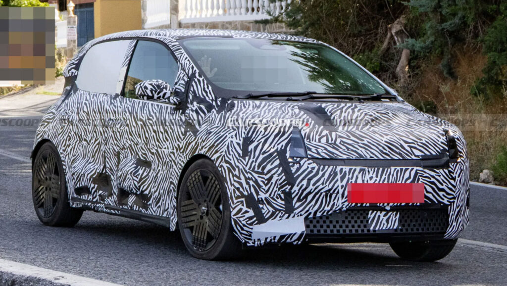

for DC Advanced UX Team.Vivi · Yohan · Libby · Lim Jisu · Katey · Anna
Back Issue

Cockpit
Nissan Pixo: a Twingo in a boxier suit
Nissan has confirmed the Pixo, an A-segment electric city car for Europe that debuts September 23 and sits below the Micra. Underneath it is the Renault Twingo E-Tech — 27.5 kWh, 80 hp, about 260 km WLTP — restyled with squared-off headlights, a simplified hood, a cube-mesh front intake and conventional rear lamps in place of the Twingo's retro cues. The cabin carries over the Twingo's 7-inch cluster and 10-inch touchscreen with minimal controls and colour accents; expect around €19,500.
PRINT covers the Branding Dictionary from Allison Henry Aver, founder and ECD of Portland agency LETTER A: an online A-to-Z at lettera.xyz that defines the deliverables agencies talk about every day in plain, occasionally wry language, and is updated as the vocabulary drifts. The point is that studios use terms loosely — brand book vs brand guidelines is the classic confusion in client meetings — and 'shared vocabulary changes the whole dynamic. It turns a confusing set of deliverables into a clear one and keeps the wires from crossing.'
PRINT介绍波特兰工作室LETTER A创始人兼执行创意总监Allison Henry Aver做的'品牌词典'：lettera.xyz上的在线A到Z，用直白、偶尔带点俏皮的语言定义机构每天挂在嘴边的交付物，并随术语演变持续更新。要点在于工作室用词随意——'品牌手册'与'品牌规范'就是客户会议上的经典混淆——而'共享词汇改变整个氛围，把一堆令人困惑的交付物变得清晰，不再接错线'。
PRINT가 포틀랜드 에이전시 LETTER A의 창립자·ECD 앨리슨 헨리 에이버가 만든 '브랜딩 사전'을 소개했다. lettera.xyz의 온라인 A-to-Z로, 에이전시가 매일 입에 올리는 산출물을 쉬운 말로(가끔은 능청스럽게) 정의하고 용어가 바뀌면 갱신한다. 요지는 스튜디오마다 용어를 느슨하게 쓴다는 것—'브랜드 북'과 '브랜드 가이드라인'이 클라이언트 미팅의 고전적 혼동—이고 '공유된 어휘가 판을 바꾼다. 헷갈리는 산출물 목록이 명확해지고 선이 꼬이지 않는다.'
Hong Kong's Jitrainno has an E-Ink art frame you can talk to: say or type 'paint my dog as a Japanese ink painting' and the Echo generates it through third-party image APIs (the company says it does not train models on your content), or pulls from AI galleries, photography and your own collection. The panel is E-Ink Spectra 6 with six pigments and a proprietary colour layer tuned for skin tones and gradients, drawing zero power when static; solid-wood frames in 7.5, 13.3 and 31.5 inches, auto-rotation, USB-C, offline or cloud. Fulfilment estimated November.
홍콩 Jitrainno가 말을 거는 E-Ink 아트 프레임을 내놨다. '내 개를 일본 수묵화로 그려줘'라고 말하거나 타이핑하면 Echo가 서드파티 이미지 API로 생성하고(사용자 콘텐츠로 모델을 학습하지 않는다고 밝힘), AI 갤러리·사진·개인 컬렉션에서도 가져온다. 패널은 6색 E-Ink Spectra 6에 피부톤·그라데이션용 자체 컬러 레이어, 정지 상태 전력 0. 원목 프레임 7.5·13.3·31.5인치, 자동 회전, USB-C, 오프라인·클라우드 모드. 11월 배송 예정.
For 2027 US models — Atlas, Golf, ID. Buzz and Tiguan — Volkswagen's updated Travel Assist adds Tesla-style assisted lane changes: above 45 mph, tap the indicator and the car checks the adjacent lane with radar and moves over, waiting up to 12 seconds for a gap if traffic is close. Emergency Assist Plus escalates when a driver stops responding — repeated lane departures trigger a controlled pull-over with hazards, horn, unlocked doors and an emergency call — and the rear camera now flags pedestrians. The HMI lesson: the stalk becomes an intent input, not just a lamp switch.
2027년형 미국 사양 아틀라스·골프·ID. 버즈·티구안의 업데이트된 트래블 어시스트에 테슬라식 보조 차선 변경이 들어간다. 45 mph 이상에서 방향지시등을 켜면 레이더로 옆 차선을 확인해 스스로 옮기고, 차가 가까우면 최대 12초 틈을 기다린다. 이머전시 어시스트 플러스는 운전자가 반응하지 않으면 단계적으로 개입—차선 이탈이 반복되면 비상등·경적·도어 잠금 해제·긴급 통화와 함께 갓길 정차—하고 후방 카메라는 보행자를 표시한다. HMI 교훈: 레버가 램프 스위치가 아니라 '의도 입력'이 된다.
AGV's Pista GP R3 is the biggest rework of its MotoGP helmet since 2011: an all-carbon shell built from more than 100 new moulds, a redesigned spoiler that cuts drag with the head turned, carbon-composite vents and a wide-field visor up to 5 mm thick with stronger retention. The headline is Sphera with RLS: an outer layer separated from the main shell by microspheres that releases in a controlled way under oblique impact, which independent testing at I3A says cuts concussion risk six-fold. It meets the new FIM FRHPhe-02 standard, weighs no more than before, and debuts at the San Marino GP.
AGV Pista GP R3是其MotoGP头盔自2011年以来最大幅度的重做：全碳纤维壳体由100多套新模具制成，重新设计的扰流尾翼在转头时降低阻力，碳复合材料通风口，宽视野镜片最厚5 mm且锁扣更牢。重点是Sphera与RLS：外层与主壳之间以微球分隔，斜向撞击时可控脱离，I3A独立测试称脑震荡风险降低六倍。符合新FIM FRHPhe-02标准，重量不增，圣马力诺站首秀。
AGV Pista GP R3는 2011년 이후 MotoGP 헬멧의 가장 큰 재설계다. 100개 넘는 새 금형으로 만든 풀카본 셸, 고개를 돌렸을 때 항력을 줄이는 새 스포일러, 카본 복합 벤트, 최대 5 mm 두께에 잠금력을 높인 광시야 바이저. 핵심은 Sphera와 RLS—본체 셸과 마이크로스피어로 분리된 외피가 사선 충격 때 통제된 방식으로 떨어져 나가며, I3A 독립 시험 기준 뇌진탕 위험을 6분의 1로 줄인다. 새 FIM FRHPhe-02 규격 충족, 무게 증가 없음, 산마리노 GP 데뷔.
A week after Range Rover's boss called Chinese copies 'a compliment', CarNewsChina found the reverse case: an Xpeng GX owner paid Sugar Design to turn the 5,265 mm six-seat crossover into a Range Rover — bronze body trim, U-shaped door elements, bronze wheels and roof accents, Range Rover badges front, rear and on the two-spoke steering wheel. The irony is that the GX is technically the more advanced car: steer-by-wire, brake-by-wire, dual-chamber air suspension, 7.5-degree rear steering and a 0.255 Cd, at roughly a fifth of a real Range Rover's price in China.
레인지로버 수장이 중국산 카피를 '칭찬'이라 부른 지 일주일 만에 CarNewsChina가 반대 사례를 찾았다. 샤오펑 GX 오너가 Sugar Design에 맡겨 전장 5,265 mm 6인승 크로스오버를 레인지로버로 바꾼 것—브론즈 바디 트림, U자형 도어 요소, 브론즈 휠·루프 액센트, 앞뒤와 2스포크 스티어링휠의 Range Rover 배지까지. 아이러니는 GX가 기술적으로 더 앞선 차라는 점이다. 스티어 바이 와이어, 브레이크 바이 와이어, 듀얼 챔버 에어 서스펜션, 7.5도 후륜 조향, Cd 0.255, 그리고 중국 내 가격은 진짜 레인지로버의 약 5분의 1.
Spy shots show BYD's Yangwang testing two flagships aimed squarely at Rolls-Royce. The sedan has a long wheelbase and a silhouette close to the Phantom, coach doors with side-mounted handles, Maybach-style wheels, a solid metal roof and air suspension, and looks pillarless. The SUV drops the U8's off-road stance for Cullinan proportions — lower ride height, low-profile wheels, a single roof LiDAR — and reads as an on-road car. No names or dates yet.
스파이샷에 BYD 양왕이 롤스로이스를 정조준한 플래그십 두 대를 시험하는 모습이 잡혔다. 세단은 롱휠베이스에 팬텀에 가까운 실루엣, 측면 손잡이가 달린 코치 도어, 마이바흐풍 휠, 금속 루프와 에어 서스펜션, 필러리스로 보인다. SUV는 U8의 오프로드 자세를 버리고 컬리넌 비례—낮은 차고, 로우 프로파일 휠, 루프 라이다 하나—로 온로드 차처럼 읽힌다. 이름·일정은 아직 없음.
Shanghai designer Tongqi Lu's Call It a Day is three lamps built around the moment you get home too tired to look for a switch: bop the table lamp, tug the pendant by its coiled yellow cord, or press the floor lamp anywhere on its body. The whole shade is the input. Shades are soft translucent silicone with a fine embedded grid that reads as a woven pattern when lit. Yanko's Behind the Design piece walks through the reasoning: design the interaction for the lowest-attention state, not the showroom.
上海设计师陆桐琪的Call It a Day是三盏围绕'回家累到不想找开关'那一刻设计的灯：拍一下台灯、拽一下吊灯的黄色螺旋线、或按落地灯身上任意位置。整个灯罩就是输入界面。灯罩是柔软半透明硅胶，内嵌细网格，点亮后呈现编织纹理。Yanko的Behind the Design专栏梳理了思路：为注意力最低的状态设计交互，而不是为展厅。
상하이 디자이너 루퉁치의 Call It a Day는 스위치를 찾기도 귀찮을 만큼 지쳐 집에 온 순간을 위한 조명 세 점이다. 테이블 램프는 툭 치고, 펜던트는 노란 코일 코드를 당기고, 플로어 램프는 몸통 아무 데나 누른다. 갓 전체가 입력장치. 갓은 부드러운 반투명 실리콘에 가는 격자를 넣어 켜면 직물 패턴처럼 보인다. Yanko의 Behind the Design은 그 논리를 따라간다—쇼룸이 아니라 주의력이 가장 낮은 상태를 위해 인터랙션을 설계하라.
Philippe Starck has received the DesignEuropa Lifetime Achievement Award, and designboom's interview turns on one line: 'less materiality means more humanity.' His argument is dematerialisation — shrink the physical footprint of objects, hide technology so it never clutters a space, strip things to their essentials, and the emotional connection grows rather than shrinks. Design, in his framing, is a tool for social improvement before it is a style; a useful counterweight to a week of 5.4-metre SUVs.
필립 스탁이 DesignEuropa 평생공로상을 받았고, designboom 인터뷰는 한 문장을 축으로 돈다. '물질이 줄수록 인간성이 는다.' 그의 논지는 탈물질화—오브제의 물리적 발자국을 줄이고, 기술은 공간을 어지럽히지 않게 숨기고, 본질만 남기면 정서적 연결은 오히려 커진다는 것. 그에게 디자인은 스타일이기 전에 사회를 나아지게 하는 도구다. 5.4 m SUV들의 한 주에 유용한 균형추.
At 245 Centre Street, New York (September 11 – October 10), Tom Sachs has rebuilt Chanel's Paris flagship as '31 Rue Cambon' in plywood, corrugated cardboard, diamanté and Lego: 31 hand-made jackets reproducing looks from Inès de la Fressange to Marge Simpson, quilted bags, slingbacks and costume jewellery, every stitch visibly made. Chanel is not involved, though Sachs recalls Lagerfeld's 'I love it' to his 1998 Chanel piece. His line for anyone in branding: 'You can't be a critic of consumerism without being an active participant.'
9月11日至10月10日，Tom Sachs在纽约Centre街245号用胶合板、瓦楞纸、水钻和乐高把香奈儿巴黎旗舰店重建为'31 Rue Cambon'：31件手工外套复刻从Inès de la Fressange到Marge Simpson的造型，还有菱格包、露跟鞋与人造珠宝，每一针都可见。香奈儿未参与，但Sachs记得拉格斐对他1998年香奈儿作品说过'我喜欢'。他留给品牌从业者的一句话：'不亲身参与消费主义，就没法批判它。'
9월 11일~10월 10일 뉴욕 센터 스트리트 245번지에서 톰 삭스가 샤넬 파리 플래그십을 합판·골판지·다이아망테·레고로 '31 Rue Cambon'으로 다시 지었다. 이네스 드 라 프레상주부터 마지 심슨까지의 룩을 재현한 수제 재킷 31벌, 퀼팅 백, 슬링백, 코스튬 주얼리—바느질 자국이 다 보인다. 샤넬은 관여하지 않았지만, 삭스는 1998년 샤넬 작업에 라거펠트가 '마음에 든다'고 했던 걸 떠올린다. 브랜딩 하는 이에게 남기는 말: '소비주의에 적극 참여하지 않고는 그것을 비판할 수 없다.'
For its 50th anniversary, Whistles and agency Weirdo (Louis Persent) flooded London with anonymous fly-posters asking for 'open-minded women', no brand named; 2,000-plus replied with what open-mindedness meant to them, and 50 of them, aged 19 to 72, were shot in a single day by Alice Neale on plain white with Archi Shah filming on a camcorder. The repositioning is 'Designed for an Open Mind', with a new citrus signature colour, Lemonade, and a raw, un-glossy tone Persent frames as leaving 'rigid top-down campaigns' for projects.
50주년을 맞아 휘슬스와 에이전시 Weirdo(루이 퍼센트)가 브랜드명 없는 익명 전단으로 런던을 덮었다. '열린 마음의 여성'을 찾는다는 문구에 2,000명 넘게 자기만의 '열린 마음'을 적어 보냈고, 그중 19~72세 50명을 하루에 앨리스 닐이 흰 배경에서 찍고 아치 샤가 캠코더로 담았다. 새 포지셔닝은 'Designed for an Open Mind', 새 시그니처 컬러는 시트러스빛 'Lemonade', 톤은 날것에 광택 없는 쪽—퍼센트는 '경직된 톱다운 캠페인'을 떠나 프로젝트로 간다고 말한다.
British start-up La Cinquecento (Max Kindersley) debuted its first restomod at Italy's Tutto Bene hillclimb: a 1970s Fiat 500 that spent 25 years in a barn, redrawn by Milan's BorromeodeSilva with rally-style front lamps, widened fenders, deeper sills and matte disc wheels in red with cream accents. Inside, saddle leather on bucket seats and door cards over vintage carpet; underneath, a twin-spark Fiat 126 twin with reworked suspension, brakes, steering, cooling and electrics. A numbered series follows.
영국 스타트업 La Cinquecento(맥스 킨더슬리)가 이탈리아 투토 베네 힐클라임에서 첫 레스토모드를 공개했다. 헛간에 25년 잠들어 있던 1970년대 피아트 500을 밀라노 BorromeodeSilva가 다시 그렸다—랠리풍 전면 램프, 넓힌 펜더, 깊어진 사이드 실, 무광 디스크 휠, 빨강에 크림 액센트. 실내는 빈티지 카펫 위 새들 가죽 버킷 시트와 도어 트림, 밑에는 트윈스파크 피아트 126 2기통과 전면 재작업한 서스펜션·브레이크·조향·냉각·전장. 넘버링 시리즈가 이어진다.
Audi Design and Valerio Cometti + V12Design have reworked Rocket Espresso's Bicocca into an Audi machine, hand-built in Milan: matte aluminium body against deep black surfaces, gloss-black controls and handle, and feet that make the 35 kg block appear to float. The brief was the TT — clear surfaces, minimal lines, a recognisable silhouette — applied to dual boilers (0.5 L coffee, 1.5 L steam), a rotary pump, precise temperature control and a 3.5-inch touchscreen, with a matching Spluga grinder. Price and date to come.
아우디 디자인팀과 발레리오 코메티+V12Design이 Rocket Espresso의 Bicocca를 아우디 머신으로 다시 만들었다. 밀라노 수제작, 무광 알루미늄 바디에 깊은 검정 면, 유광 검정 조작부와 핸들, 35 kg 덩어리를 떠 있는 듯 보이게 하는 발. 브리프는 TT—깨끗한 면, 최소한의 선, 알아볼 수 있는 실루엣—였고, 이를 듀얼 보일러(커피 0.5 L·스팀 1.5 L), 로터리 펌프, 정밀 온도 제어, 3.5인치 터치스크린에 입혔다. 짝을 이루는 Spluga 그라인더 포함. 가격·출시는 미정.
Toyota Gazoo Racing's GR KART is an entry-level racing kart designed around ownership friction rather than lap times: a 215 cc engine and 83 kg, adjustable pedals and a tilting wheel for drivers from 135 to 185 cm so a family can share it, a belt drive with auto-tensioner instead of a chain, and a fuel system and catch tank that let it stand upright in a Noah or Voxy without draining anything. Buyers get a digital driver's passport for 36 partner tracks and a GR app with tuition; Japan first, about ¥370,000.
토요타 가주 레이싱의 GR KART는 랩타임보다 '소유의 마찰'을 줄이도록 설계한 입문용 레이싱 카트다. 215 cc 엔진에 83 kg, 135~185 cm 운전자를 위한 조절식 페달과 틸팅 휠로 가족이 함께 쓰고, 체인 대신 자동 텐셔너 벨트 구동, 연료계와 캐치탱크 덕에 기름을 빼지 않고 노아·복시에 세워 싣는다. 구매자는 제휴 트랙 36곳용 디지털 드라이버 패스포트와 강습 콘텐츠가 담긴 GR 앱을 받는다. 일본 먼저, 약 37만 엔.
Mithilesh Gupta Konda's RHYTHM is a pocket music player that refuses to be an app: a 2-inch colour screen, a mechanical rotary encoder and real buttons, microSD storage instead of streaming, and two 3.5 mm outputs with a dedicated amplifier each so two people can listen without degrading the signal. Inside, an ESS Sabre DAC and discrete amp stages on a board that separates digital logic from the analogue path, with an ESP32-S3 handling files. The pitch: 'smartphones turned music into just another notification competing for attention.'
미틸레시 굽타 콘다의 RHYTHM은 앱이 되기를 거부하는 주머니 속 음악 플레이어다. 2인치 컬러 화면, 기계식 로터리 엔코더와 실물 버튼, 스트리밍 대신 microSD, 각각 전용 앰프가 달린 3.5 mm 출력 두 개로 둘이 들어도 신호가 안 깎인다. 내부는 ESS 세이버 DAC와 디스크리트 앰프단, 디지털 로직과 아날로그 경로를 분리한 기판, 파일은 ESP32-S3가 맡는다. 주장은 '스마트폰이 음악을 주의를 다투는 또 하나의 알림으로 만들었다'는 것.
Ahead of a September 21 launch, Geely showed the refreshed Galaxy EX5's new front trunk — rated for 50 kg, and clearly larger than the 70-litre one on the smaller E2, though volume is not yet stated. The 4,636 mm SUV gains 21 mm of wheelbase, semi-hidden door handles, new bumpers and a roof LiDAR for the G-Pilot H5 system with navigate-on-autopilot, while the rear motor jumps to 245 kW. Geely calls it a full overhaul of structure and electronics under styling that barely changes — a quiet refresh in the current Chinese manner.
9월 21일 출시를 앞두고 지리가 새 갤럭시 EX5의 프렁크를 보여줬다. 적재 50 kg, 더 작은 E2의 70 L보다 확실히 크지만 용량은 아직 미공개. 전장 4,636 mm SUV는 휠베이스 21 mm 연장, 세미 히든 도어 핸들, 새 범퍼, 내비게이트 온 오토파일럿을 지원하는 G-Pilot H5용 루프 라이다를 얻었고 후륜 모터는 245 kW로 뛰었다. 지리는 스타일링은 거의 그대로 둔 채 구조와 전장을 전면 재작업했다고 말한다—요즘 중국식 '조용한 페이스리프트'.